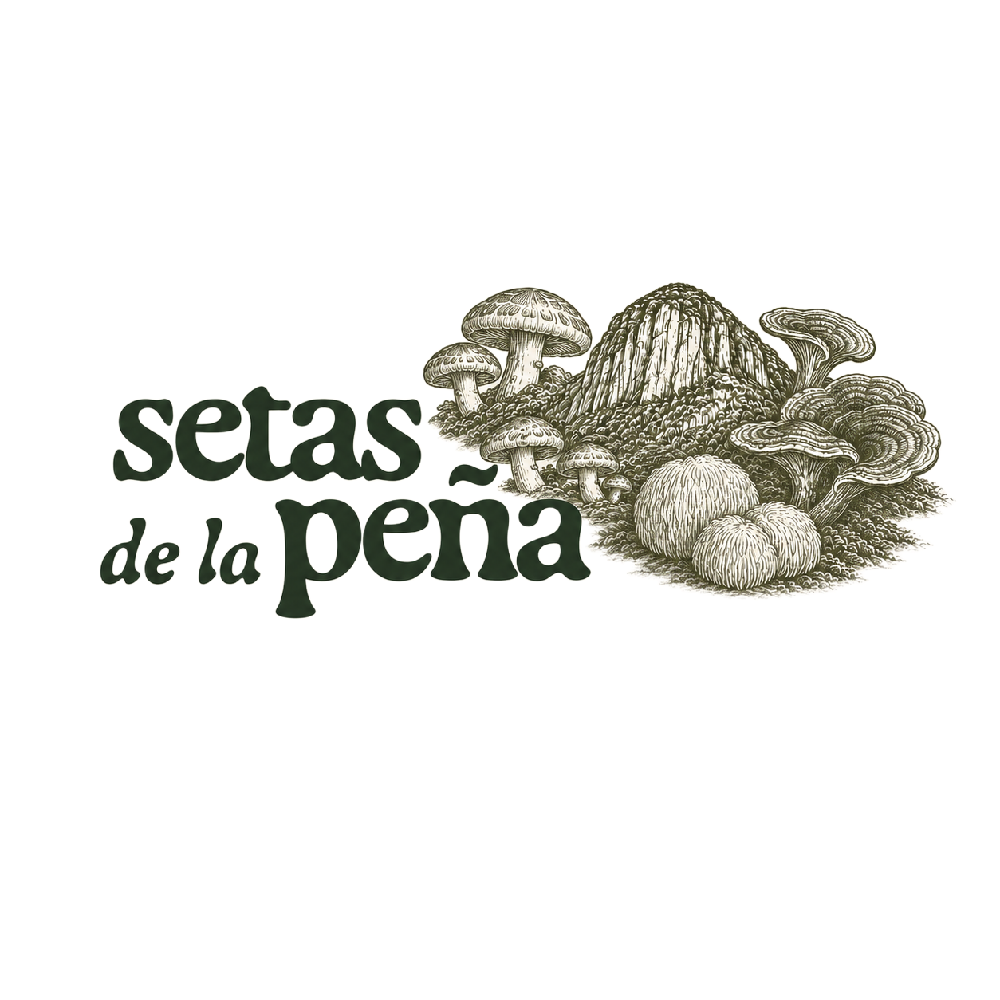
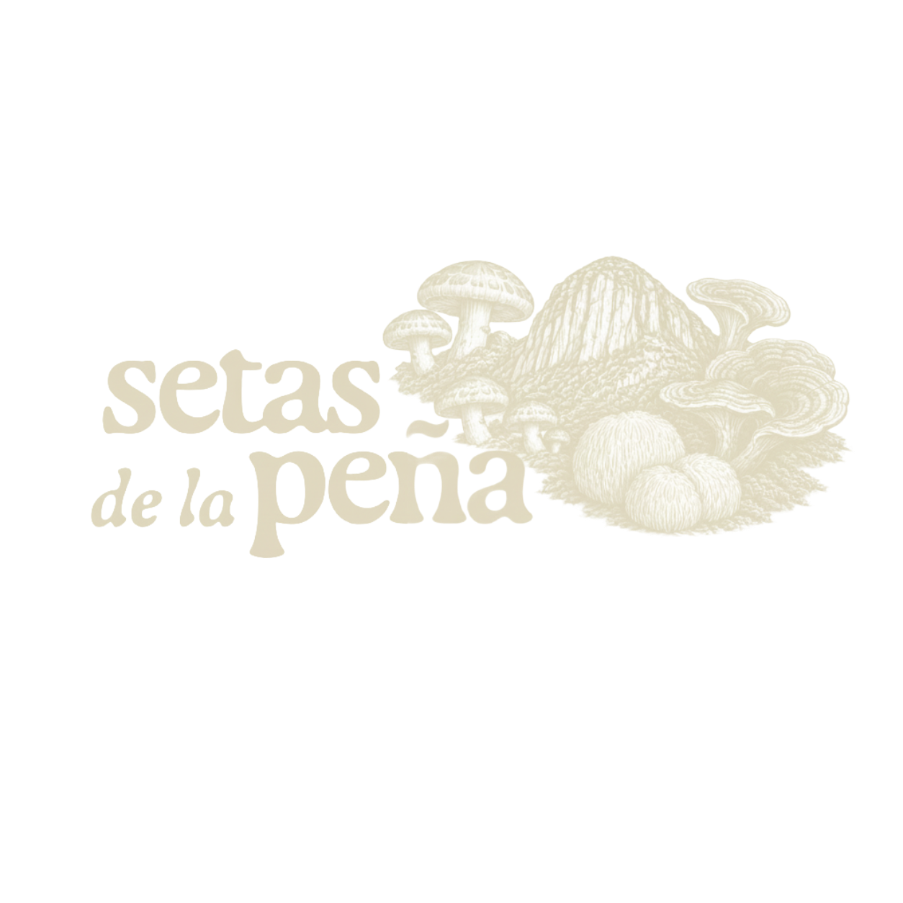

Uso: solo esta marca tipográfica; sin variantes de color, sin recomposición. Espacio de seguridad mínimo = altura de la "a" minúscula alrededor de todo el logo. No estirar, no rotar, no añadir sombra.